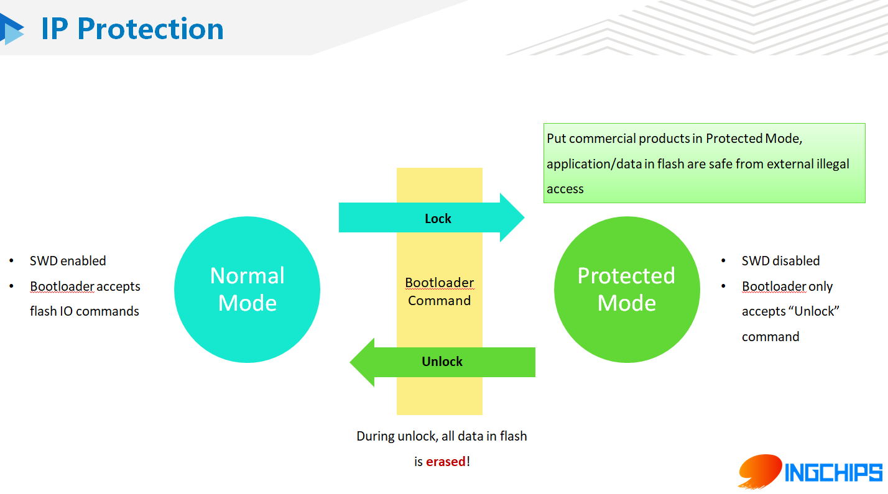
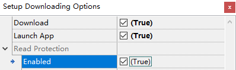

ING918 内置硬件 IP 保护功能。该保护功能启用后，有效保护客户的固件，防止非法读取。

启用 IP 保护
UART 接口
在串口下载工具（Flash Downloader）里点击 Options 按钮，将 Read Protection 使能即可。如下图所示。

SWD 接口
参考通过 SWD 接口进行量产的说明，用 platform_entry_lock.hex 代替 platform_entry.hex。
注意事项
IP 保护一旦启用，SWD 接口将被屏蔽，此后如果需要升级、更新产品固件，方法有二：
- 利用 FOTA 进行空中升级；
- 通过 UART 接口先停用 IP 保护（如前述，停用 IP 保护意味着 Flash 被全部擦除一次）。
注意: 如果客户产品中既未引出 UART0，也无 FOTA 功能，则产品固件将进入“锁定”状态：
无法升级、无法读取、无法调试。